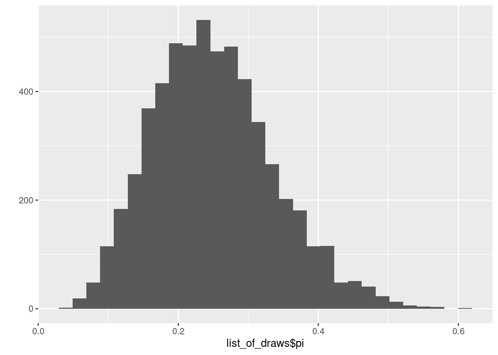
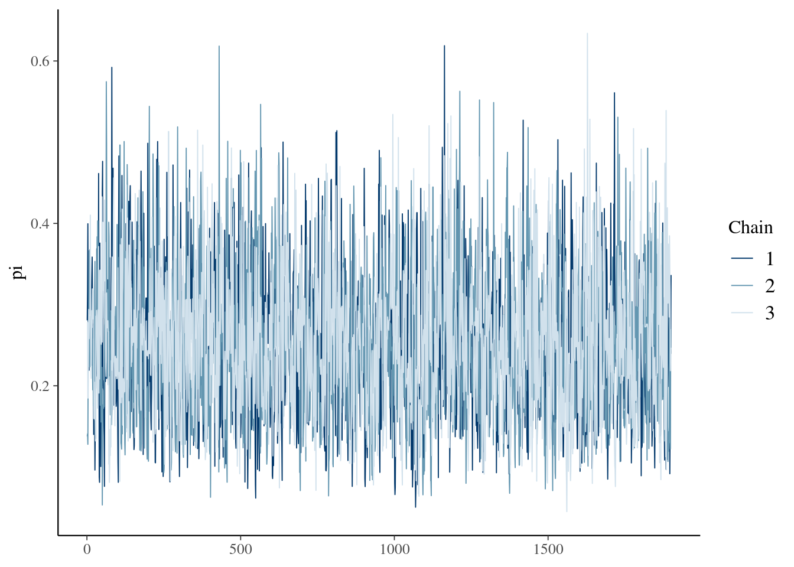
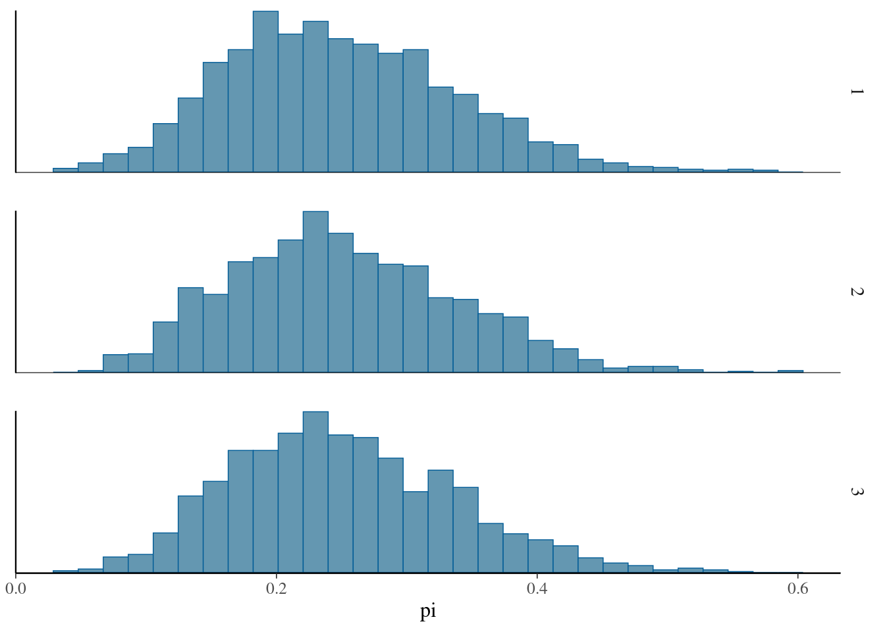
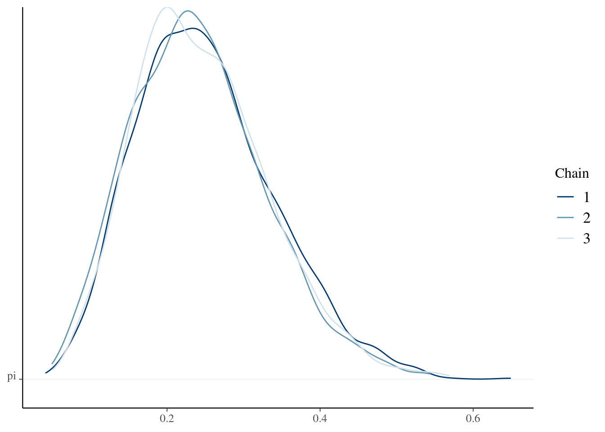
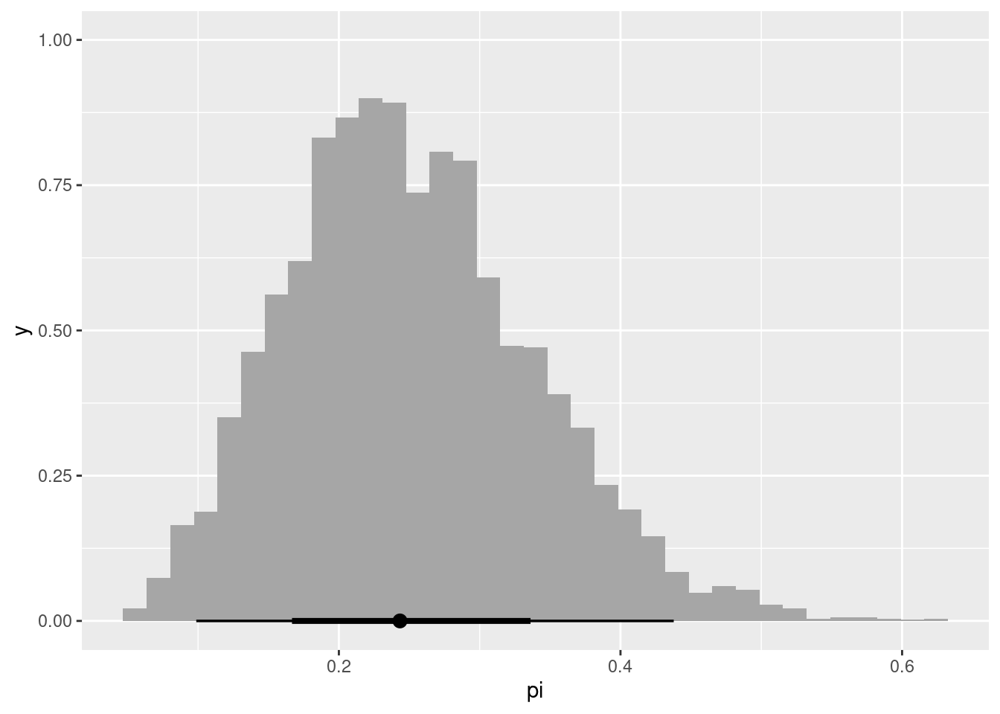

modelo <- "
data {
}
transformed data {
}
parameters {
}
transformed parameters {
}
model {
}
generated quantities {
}"10 - Introducción a RStan
A continuación se presenta una introducción a Stan, a través de su interfaz con R: {rstan}
La programación probabilística es una herramienta para describir modelos estadísticos (probabilísticos) y operar con ellos. Se trata de usar herramientas de programación para realizar inferencias estadísticas.
Stan y RStan
¿Qué es Stan?
- Stan es un lenguaje de programación probabilístico imperativo
- Está desarrollado sobre C++
- Los programas de Stan definen un modelo probabilístico (datos + parámetros) y realizan inferencias sobre él
- Open source
¿Qué es RStan?
- RStan es una interfaz de Stan en R
- Permite compilar y ejecutar modelos de Stan directamente en R
- Además, incluye la clase
stanfity funciones para operar con ella
Pasos a seguir
- Escribir un programa en Stan (archivo
.stanostringen una variable) - Usando la función
rstan::stan_model, generar el código C\(++\), compilarlo y generar un objetostanmodel - Usando la función
rstan::sampling, obtener muestras del posterior dado elstanmodely los datos. Las muestras quedan en un objetostanfit - Procesar el
stan_fity sacar conclusiones
Estructura de un modelo en Stan
library(rstan)Loading required package: StanHeaders
rstan version 2.32.6 (Stan version 2.32.2)For execution on a local, multicore CPU with excess RAM we recommend calling
options(mc.cores = parallel::detectCores()).
To avoid recompilation of unchanged Stan programs, we recommend calling
rstan_options(auto_write = TRUE)
For within-chain threading using `reduce_sum()` or `map_rect()` Stan functions,
change `threads_per_chain` option:
rstan_options(threads_per_chain = 1)library(tidybayes)
library(ggdist)
library(ggplot2)N <- 20
y <- 4
model_beta1_stan <- "
data {
int N;
int Y;
}
parameters {
real<lower=0, upper=1> pi;
}
model {
pi ~ beta(2,2); // prior
Y ~ binomial(N, pi); // likelihood
}"
# No olvidar el final de línea ;
# Todas las variables tienen que estar declaradasmodel_beta1 <- stan_model(model_code = model_beta1_stan)
data_list <- list(Y=y, N=N)
model_beta1_fit <- sampling(object=model_beta1,
data=data_list,
chains = 3,
iter = 2000,
warmup = 100)
SAMPLING FOR MODEL 'anon_model' NOW (CHAIN 1).
Chain 1:
Chain 1: Gradient evaluation took 5e-06 seconds
Chain 1: 1000 transitions using 10 leapfrog steps per transition would take 0.05 seconds.
Chain 1: Adjust your expectations accordingly!
Chain 1:
Chain 1:
Chain 1: WARNING: There aren't enough warmup iterations to fit the
Chain 1: three stages of adaptation as currently configured.
Chain 1: Reducing each adaptation stage to 15%/75%/10% of
Chain 1: the given number of warmup iterations:
Chain 1: init_buffer = 15
Chain 1: adapt_window = 75
Chain 1: term_buffer = 10
Chain 1:
Chain 1: Iteration: 1 / 2000 [ 0%] (Warmup)
Chain 1: Iteration: 101 / 2000 [ 5%] (Sampling)
Chain 1: Iteration: 300 / 2000 [ 15%] (Sampling)
Chain 1: Iteration: 500 / 2000 [ 25%] (Sampling)
Chain 1: Iteration: 700 / 2000 [ 35%] (Sampling)
Chain 1: Iteration: 900 / 2000 [ 45%] (Sampling)
Chain 1: Iteration: 1100 / 2000 [ 55%] (Sampling)
Chain 1: Iteration: 1300 / 2000 [ 65%] (Sampling)
Chain 1: Iteration: 1500 / 2000 [ 75%] (Sampling)
Chain 1: Iteration: 1700 / 2000 [ 85%] (Sampling)
Chain 1: Iteration: 1900 / 2000 [ 95%] (Sampling)
Chain 1: Iteration: 2000 / 2000 [100%] (Sampling)
Chain 1:
Chain 1: Elapsed Time: 0 seconds (Warm-up)
Chain 1: 0.007 seconds (Sampling)
Chain 1: 0.007 seconds (Total)
Chain 1:
SAMPLING FOR MODEL 'anon_model' NOW (CHAIN 2).
Chain 2:
Chain 2: Gradient evaluation took 1e-06 seconds
Chain 2: 1000 transitions using 10 leapfrog steps per transition would take 0.01 seconds.
Chain 2: Adjust your expectations accordingly!
Chain 2:
Chain 2:
Chain 2: WARNING: There aren't enough warmup iterations to fit the
Chain 2: three stages of adaptation as currently configured.
Chain 2: Reducing each adaptation stage to 15%/75%/10% of
Chain 2: the given number of warmup iterations:
Chain 2: init_buffer = 15
Chain 2: adapt_window = 75
Chain 2: term_buffer = 10
Chain 2:
Chain 2: Iteration: 1 / 2000 [ 0%] (Warmup)
Chain 2: Iteration: 101 / 2000 [ 5%] (Sampling)
Chain 2: Iteration: 300 / 2000 [ 15%] (Sampling)
Chain 2: Iteration: 500 / 2000 [ 25%] (Sampling)
Chain 2: Iteration: 700 / 2000 [ 35%] (Sampling)
Chain 2: Iteration: 900 / 2000 [ 45%] (Sampling)
Chain 2: Iteration: 1100 / 2000 [ 55%] (Sampling)
Chain 2: Iteration: 1300 / 2000 [ 65%] (Sampling)
Chain 2: Iteration: 1500 / 2000 [ 75%] (Sampling)
Chain 2: Iteration: 1700 / 2000 [ 85%] (Sampling)
Chain 2: Iteration: 1900 / 2000 [ 95%] (Sampling)
Chain 2: Iteration: 2000 / 2000 [100%] (Sampling)
Chain 2:
Chain 2: Elapsed Time: 0 seconds (Warm-up)
Chain 2: 0.007 seconds (Sampling)
Chain 2: 0.007 seconds (Total)
Chain 2:
SAMPLING FOR MODEL 'anon_model' NOW (CHAIN 3).
Chain 3:
Chain 3: Gradient evaluation took 1e-06 seconds
Chain 3: 1000 transitions using 10 leapfrog steps per transition would take 0.01 seconds.
Chain 3: Adjust your expectations accordingly!
Chain 3:
Chain 3:
Chain 3: WARNING: There aren't enough warmup iterations to fit the
Chain 3: three stages of adaptation as currently configured.
Chain 3: Reducing each adaptation stage to 15%/75%/10% of
Chain 3: the given number of warmup iterations:
Chain 3: init_buffer = 15
Chain 3: adapt_window = 75
Chain 3: term_buffer = 10
Chain 3:
Chain 3: Iteration: 1 / 2000 [ 0%] (Warmup)
Chain 3: Iteration: 101 / 2000 [ 5%] (Sampling)
Chain 3: Iteration: 300 / 2000 [ 15%] (Sampling)
Chain 3: Iteration: 500 / 2000 [ 25%] (Sampling)
Chain 3: Iteration: 700 / 2000 [ 35%] (Sampling)
Chain 3: Iteration: 900 / 2000 [ 45%] (Sampling)
Chain 3: Iteration: 1100 / 2000 [ 55%] (Sampling)
Chain 3: Iteration: 1300 / 2000 [ 65%] (Sampling)
Chain 3: Iteration: 1500 / 2000 [ 75%] (Sampling)
Chain 3: Iteration: 1700 / 2000 [ 85%] (Sampling)
Chain 3: Iteration: 1900 / 2000 [ 95%] (Sampling)
Chain 3: Iteration: 2000 / 2000 [100%] (Sampling)
Chain 3:
Chain 3: Elapsed Time: 0 seconds (Warm-up)
Chain 3: 0.007 seconds (Sampling)
Chain 3: 0.007 seconds (Total)
Chain 3: model_beta1_fitInference for Stan model: anon_model.
3 chains, each with iter=2000; warmup=100; thin=1;
post-warmup draws per chain=1900, total post-warmup draws=5700.
mean se_mean sd 2.5% 25% 50% 75% 97.5% n_eff Rhat
pi 0.25 0.00 0.09 0.1 0.19 0.24 0.30 0.43 2310 1
lp__ -14.00 0.01 0.70 -16.1 -14.16 -13.72 -13.55 -13.50 2788 1
Samples were drawn using NUTS(diag_e) at Sat Jun 8 18:40:33 2024.
For each parameter, n_eff is a crude measure of effective sample size,
and Rhat is the potential scale reduction factor on split chains (at
convergence, Rhat=1).model_beta1_fit@model_pars[1] "pi" "lp__"list_of_draws <- extract(model_beta1_fit,pars="pi")
str(list_of_draws)List of 1
$ pi: num [1:5700(1d)] 0.135 0.368 0.273 0.092 0.139 ...
..- attr(*, "dimnames")=List of 1
.. ..$ iterations: NULLdim(list_of_draws$pi)[1] 5700head(list_of_draws$pi)[1] 0.13507645 0.36763514 0.27268855 0.09200807 0.13867351 0.16447723mean(list_of_draws$pi<0.6)[1] 0.9994737ggplot2::qplot(list_of_draws$pi)
array_of_draws <- as.array(model_beta1_fit, pars="pi")bayesplot::mcmc_trace(array_of_draws,pars="pi")
bayesplot::mcmc_hist_by_chain(array_of_draws,pars="pi")
bayesplot::mcmc_dens_chains(array_of_draws,pars="pi")
df_of_draws <- as.data.frame(model_beta1_fit,pars="pi")
#usando el paquete tidybayes + ggdist
model_beta1_fit |>
spread_draws(pi) |>
ggplot(aes(x=pi)) +
stat_histinterval()